Језици специфични за домен
Увод
Проф. др Игор Дејановић (igord на uns ac rs)
Креирано 2026-03-12 Thu 14:27, притисни ESC за мапу, Ctrl+Shift+F за претрагу, "?" за помоћ
Садржај
1. Проблем и мотивација
1.1. Шта је језик?
- Комуникација мисли и осећања системом знакова као што су звуци, гестови или писани симболи1.
- Систем знакова, симбола, гестова и правила који се користе у комуникацији2.
1.2. Шта је софтверски језик?
- Језик коришћен у комуникацији човек-рачунар или рачунар-рачунар.
- У варијанти човек-рачунар тежимо да језик буде лак за разумевање од стране човека али ипак да може да се процесира на ефикасан начин од стране рачунара.
- У контексту развој софтвера две су улоге језика:
- прескриптивна - за опис будућих система
- дескриптивна - за опис постојећих система
1.3. Шта домен?
- Сфера деловања, интереса или функције1.
- Област знања, утицаја, или деловања2.
- Да би се доменско знање могло процесирати и да би могли комуницирати у одређеном домену корисно је дефинисати онтологију домена која описује концепте домена и њихове међусобне везе.
- Пример домена: осигурање, здравство, финансије, саобраћај…
- Домени могу садржати поддомене. На пример, ако је посматрани домен проблема осигурање, поддомени могу бити животно осигурање, осигурање возила, осигурање некретнина и сл.
1.4. Језици специфични за домен - ЈСД (Domain-Specific Languages - DSL)
- Језици специфични за домен (ЈСД, енг. Domain-Specific Languages - DSL) су језици прилагођени и ограничени на одређени домен проблема.
- За разлику од језика опште намене (ЈОН, енг. General Purpose Language - GPL), нуде повећање експресивности кроз употребу концепата и нотација прилагођених домену проблема и доменским експертима.
- Називају се још и мали језици (енг. little languages).
- Успешан ЈСД је фокусиран на узак, добро дефинисан домен и покрива га на одговарајући начин.
- Домен често има свој језик коришћен од стране доменских експерата иако не постоји његова имплементација на рачунару.
2. Примери
2.1. SQL
SELECT player, stadium
FROM game JOIN goal ON (id=matchid)
2.2. JPA мапирање
@Entity
@Table(name="COURSES")
public class Course {
private long courseId;
private String courseName;
public Course() {
}
public Course(String courseName) {
this.courseName = courseName;
}
@Id
@GeneratedValue
@Column(name="COURSE_ID")
public long getCourseId() {
return this.courseId;
}
}
2.3. Build језици (Ant/Maven/Gradle)

2.4. Пословни процеси - BPMN

2.5. OrgMode
Белешке, креирање садржаја, агенда, писмено програмирање (literate programming).
** PROJ
*** TODO Прегледати пријаву грешке #173
SCHEDULED: <2022-12-14 Wed>
1. [x] Неко парче кода:
#+begin_src rust
fn main() {
// Statements here are executed when the compiled binary is called
// Print text to the console
println!("Hello World!");
}
#+end_src
#+RESULTS:
: Hello World!
2. [ ] Нека друга забелешка...
*** WAIT Предати пројектни извештај
| Активност | Завршено | Проблеми |
|----------------+----------+------------------------|
| Прва активност | 30% | Нема |
| Друга актиност | 25% | Проблеми у снабдевању |
2.6. Typst
Припрема за штампу (typesetting).

2.7. Scratch
Учење програмирања за децу.
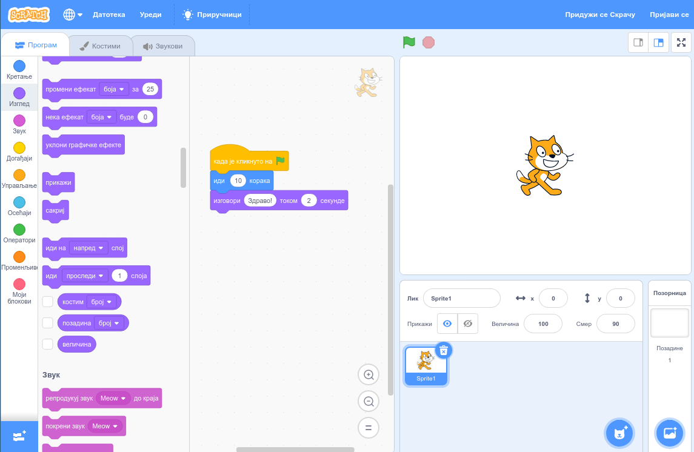
2.8. Inform
Информ је језик за креирање интерактивне фикције (текстуалних авантура) базиран на природном језику.
"Cactus Will Outlive Us All"
Death Valley is a room. Luckless Luke and Dead-Eye Pete are men in the Valley.
A cactus is in the Valley. Persuasion rule: persuasion succeeds.
A person has an action called death knell. The death knell of Luckless Luke is pulling the cactus.
The death knell of Dead-Eye Pete is Luke trying dropping the cactus.
Before an actor doing something:
repeat with the victim running through people in the location:
let the DK be the death knell of the victim;
if the DK is not waiting and the current action is the DK:
say "It looks as if [the DK] was the death knell for [the victim], who looks startled,
then nonexistent.";
now the victim is nowhere.
2.9. ChucK
Језик за креирање музике и синтезу звука у реалном времену.
// this synchronizes to period
.5::second => dur T;
T - (now % T) => now;
// construct the patch
SndBuf buf => Gain g => dac;
// read in the file
"kick.wav" => buf.read;
// set the gain
.5 => g.gain;
// time loop
while( true )
{
// set the play position to beginning
0 => buf.pos;
// randomize gain a bit
Math.random2f(.8,.9) => buf.gain;
// advance time
1::T => now;
}
2.10. GritQL
GritQL је ЈСД за претрагу, линтинг и трансформацију кода.
`console.log($log)` => . where {
$log <: not within `try { $_ } catch { $_ }`
}
2.11. LMQL
LMQL је ЈСД за програмирање у контексту великих језичких модела.
@lmql.query
def meaning_of_life():
'''lmql
# top-level strings are prompts
"Q: What is the answer to life, the \
universe and everything?"
# generation via (constrained) variables
"A: [ANSWER]" where \
len(ANSWER) < 120 and STOPS_AT(ANSWER, ".")
# results are directly accessible
print("LLM returned", ANSWER)
# use typed variables for guaranteed
# output format
"The answer is [NUM: int]"
# query programs are just functions
return NUM
'''
# so from Python, you can just do this
meaning_of_life() # 42
2.12. Colobot
- Colobot је едукативна реал-тиме стратегија.
- Играч програмира роботе у виртуелном окружењу ЈСД-ом налик на C++ и Javu.

2.13. Мобилне апликације
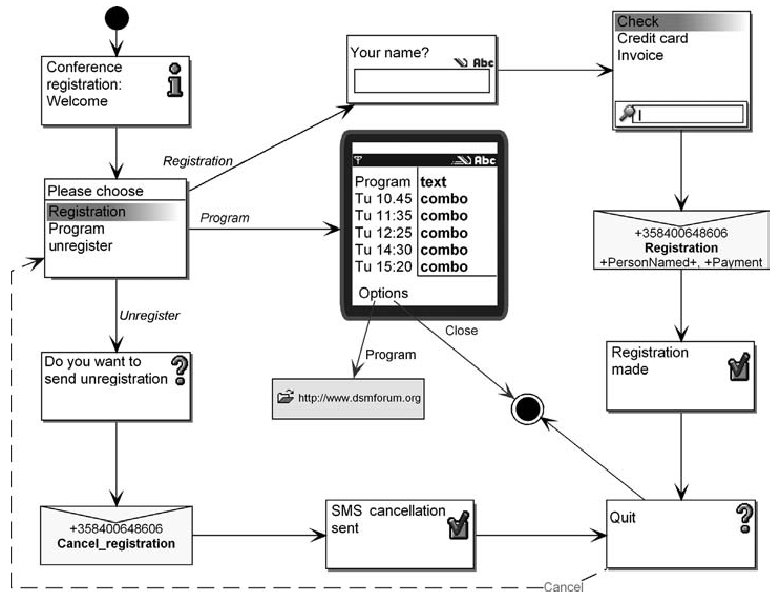
2.14. Али и…
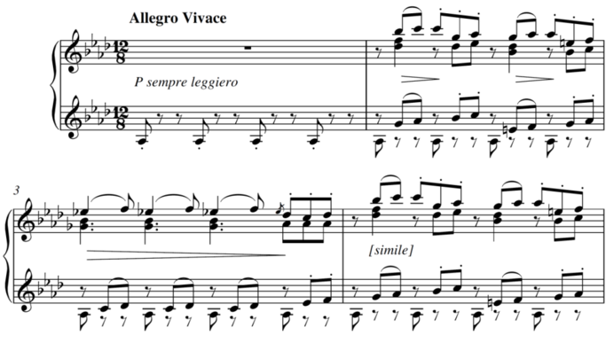
2.15. или…
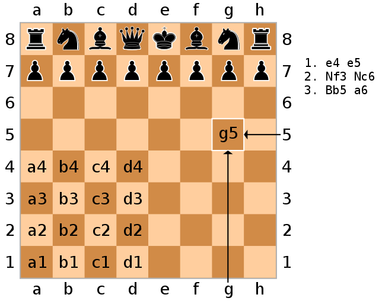
2.16. па чак и…
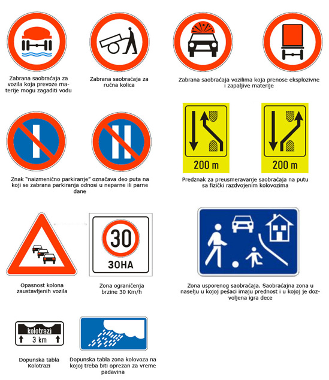
2.17. Када језик сматрамо ЈСД-ом?
- Зависи од тога шта нам је домен.
- Језик може бити више или мање прилагођен неком домену.
- У екстремном случају и општи језик као што је Јава можемо сматрати ЈСД-ом ако нам је домен "развој софтвера". Наравно, иако тачно у теоријском смислу, у практичном губимо све предности ЈСД.
- Добар ЈСД покрива узак, добро дефинисан домен (домен проблема). Користи само концепте циљног домена, ограничен је на дати домен и самим тим је исказивање решења језгровитије и јасније доменским експертима.
- Чест је случај да језик настане као ЈСД али се временом прошири до те мере да га можемо сматрати ЈОН.
3. Предности
3.1. Утицај на продуктивност
- Поједине студије показују да повећање продуктивности иде и до 1000%1.
- Шта је основни разлог за повећање продуктивности?
3.2. Проблем менталног мапирања
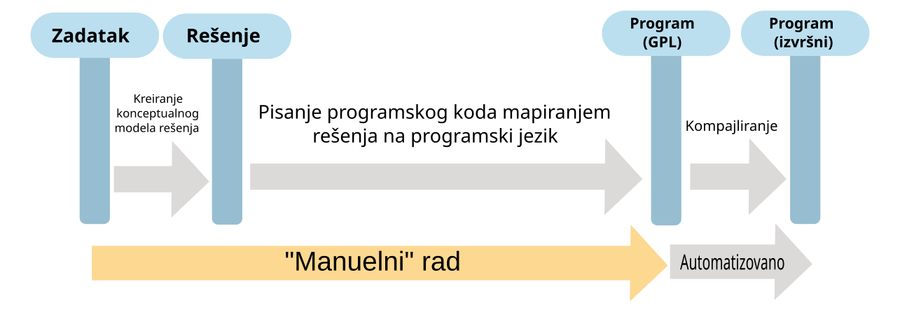
3.3. Решење употребом ЈСД
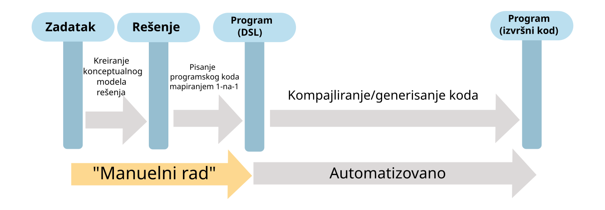
3.4. Зашто ЈСД?
- ЈСД су концизнији од језика опште намене што омогућава корисницима да јасније искажу своју намеру.
- ЈСД синтакса, било текстуална или графичка, може се прилагодити и приближити доменским експертима.
- Концепти коришћени у ЈСД су концепти проблемског (пословног) домена што под одређеним условима омогућава да доменски експерти директно користе ЈСД без посредовања програмера.
- Употребом концепата проблемског домена избегава се ручно мапирање на концепте циљне имплементационе платформе. Тај посао се обавља аутоматски употребом ЈСД преводиоца (компајлера или генератора кода).
- Исказивање решења концептима независним од коришћене технологије резултује дужим животним веком апликације.
- Самодокументујући језички искази.
3.5. Утицај на квалитет софтвера
- Коришћење концепата домена проблема доводи до смањења броја линија кода (у терминологији текстуалних нотација), што има позитиван утицај на брзину развоја и једноставност оџавања.
- Смањење броја линија кода иде и до 50 пута у појединим доменима примене. Густина софтверских грешака (број софтверских грешака на хиљаду линија кода) не зависи значајно од језика који се користи.
- Из тога се може закључити да ЈСД кроз смањење броја линија кода посредно утичу на смањење апсолутног броја софтверских грешака што повећава квалитет софтверског производа и смањује цену одржавања.
- Превођење кода на циљну платформу (компајлирање) ће резултовати конзистентним кодом.
3.6. Утицај на еволуцију апликације
- Исказивање решења концептима независним од коришћене технологије резултује дужим животним веком апликације.
- Није потребно мењати језичке исказе (програме/моделе) када дође до промене технологије. Потребно је ажурирати генератор кода.
4. Архитектуре
4.1. Архитектура базирана на преводиоцима
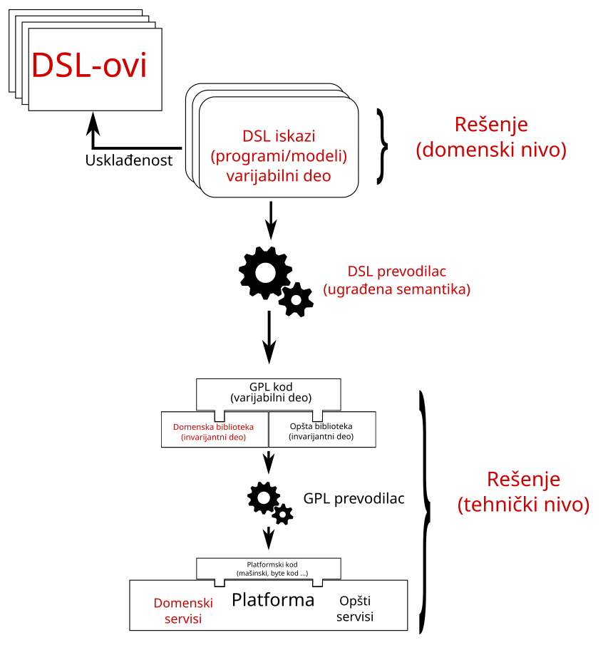
4.2. Архитектура базирана на интерпретерима
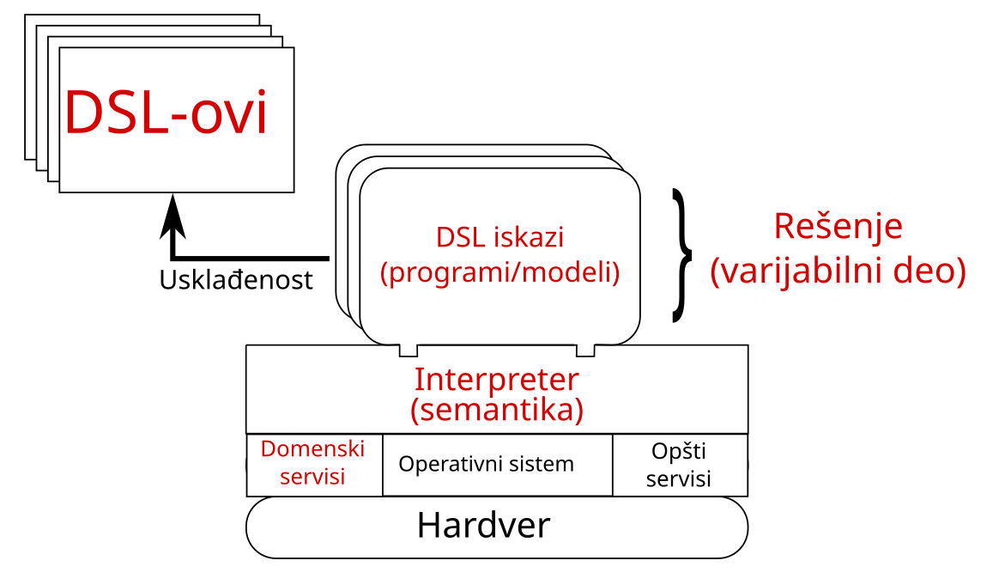
5. Градивни елементи
5.1. Градивни елементи ЈСД
Као и сваки софтверски језик и ЈСД се састоји од:
- Апстрактне синтаксе
- Једне или више конкретних синтакси
- Семантике
5.2. Апстрактна синтакса
- Одређује правила валидности исказа са становишта његове структуре.
- Дефинише концепте домена, њихове особине и међусобне релације
- Језици за дефинисање апстрактних синтакси језика се у домену моделовања називају мета-мета-моделима1.
5.3. Пример - апстрактна синтакса језика за опис коначних аутомата
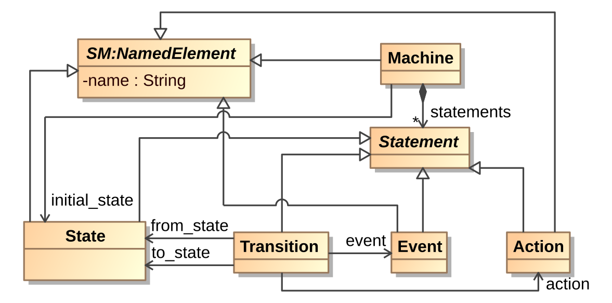
5.4. Апстрактно синтаксно стабло
- Сваки исказ на датом језику се може на апстрактан начин описати апстрактним синтаксним стаблом (Abstract Syntax Tree).
- Конкретна синтакса није важна у том случају (на пример, ако посматрамо програм на Јави тада кључне речи нису део апстрактног стабла).
5.5. Пример апстрактног синтаксног стабла
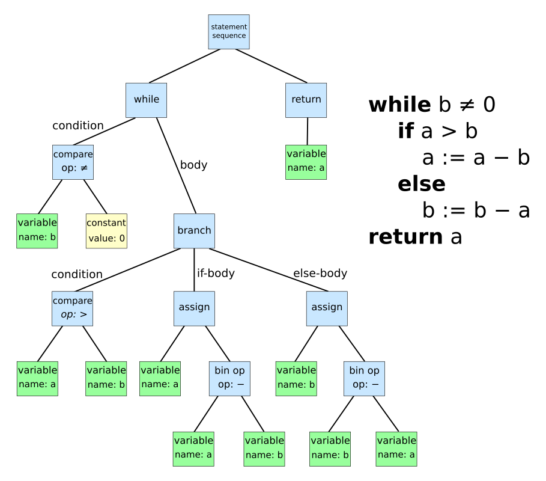
5.6. Конкретна синтакса
- Да би могли да прикажемо исказ на конкретан начин потребна нам је конкретна синтакса.
- Конкретна синтакса дефинише изглед исказа на неком језику, односно у ширем смислу дефинише и начине интеракције корисника са језичким исказима тј. представља интерфејс језик-корисник.
- Иако нам је довољна једна конкретна синтакса за један језик, можемо их имати више.
5.7. Конкретна синтакса
Пример истог исказа употребом две различите конкретне синтаксе
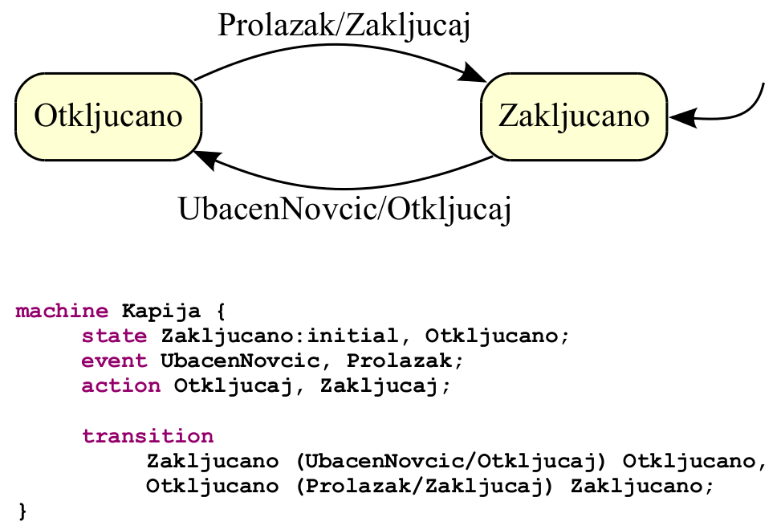
5.8. Семантика
- Дефинише смисао језичких исказа.
- Иако постоје и друге технике у пракси се најчешће семантика дефинише превођењем (компајлирањем тј. генерисањем кода) на језик који већ има дефинисану семантику путем преводиоца на ниже језике или интерпретера (нпр. виртуалне машине).
- Најчешће су циљни језици на које се ЈСД преводи језици опште намене.
- Пример: генерисање Јава програмског кода из ЈСД језичког исказа.
- Језици се преводе на све "ниже" и "ниже". Где је крај превођењу? Машински језик. Дефинисан у хардверу рачунара (процесору).
6. Класификација
6.1. Подела ЈСД према врсти конкретне синтаксе
- Текстуални
- Графички
- Табеларни
- Базиран на екранским формама
- …
- Хибридни - комбинација више основних
6.2. Текстуалне синтаксе - предности и мане
- Програмери се осећају "код куће".
- Могу се користити регуларни текст едитори.
- Серијализована форма је идентична са презентационом. се користити стандардни системи за контролу верзија (Git, Mercurial, Subversion …).
- Подршка у алатима: бојење кода, допуна кода, претрага, навигација…
- Мана: Није погодна за опис и разумевање структуре која није линеарне природе (графови, табеле итд.).
6.3. Графичке синтаксе - предности
- Разумевање структуре. Подржано операцијама zoom, pan и сл.
- Често разумљивије доменским експертима (најчешће је доменски језик графичке природе).
- Интуитивнији и лакши за учење - учење кроз испробавање (палета са алатима и концептима, онемогућавање креирање невалидних конструкција итд.).
6.4. Графичке синтаксе - мане
- Још увек сложенији за имплементацију и одржавање.
- За серијализацију се користи формат који се разликује од презентационог.
- Отежано или потпуно немогуће коришћење стандардних алата за контролу верзија. Потребно је развити посебан VCS алат.
- Захтева наменске едиторе.
6.5. Подела према врсти домена
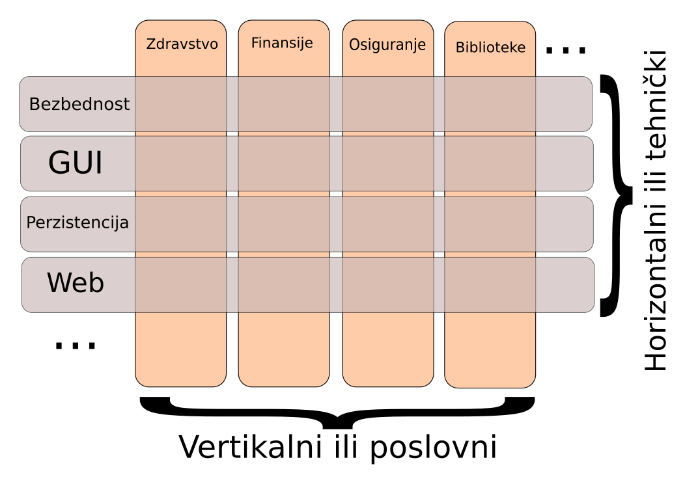
6.6. Подела ЈСД према начину имплементације
- Интерни - Настали су на бази већ постојећих програмских језика (најчешће ЈОН).
- Екстерни - Израђени "он нуле" дефинисањем синтаксе и имплементацијом компајлера који преводи програме писане на овом језику на неки други језик (најчешће ЈОН) или се програм директно интерпретира.
6.7. Интерни ЈСД
- Базирани на постојећем језику и алатима. Најчешће текстуални.
- Користе сву инфраструктуру језика домаћина (едиторе, дебагере, компајлере/интерпретере…).
- Брзи за имплементацију и лаки за одржавање. Популарни у појединим заједницама (Lisp, Ruby, Groovy, Scala…).
- Добри као улазница у свет DSL/DSM/MDE приступа.
- Најчешће на паметан начин користе могућности језика (анонимне функције, мета-програмирање итд.).
- Ограничења конкретне синтаксе.
- Свака наменска библиотека може се сматрати интерним ЈСД (API базирани)…
- … али конкретна синтакса таквог језика није прилагођена домену.
6.8. Екстерни ЈСД
- Израђени "он нуле" - скупљи развој и одржавање.
- Пуна контрола конкретне синтаксе - боље прилагођавање доменским експертима.
- Едитори и сви пропратни алати такође морају да се праве "од нуле"…
- …mada данас постоје алати који нам тај посао олакшавају.
6.9. Неки од познатијих екстерних ЈСД
- SQL: текстуални, домен - рад са релационим базама података
- HTML: текстуални, домен - дефинисање садржаја на вебу
- CSS: текстуални, домен - стилизовање садржаја
- make: текстуални, домен - изградња апликације (build)
- LaTeX/Typst: текстуални, домен: креирање штампаних материјала (typesetting)
- Window Builder: GUI базиран, домен - изградња интерфејса
- R: текстуални, домен - статистичка обрада података
6.10. Пример: Интерни ЈСД за дефинисање емаил-а (JavaMail API)
MimeMessage message = new MimeMessage(session);
message.setFrom(new InternetAddress(from));
message.addRecipient(Message.RecipientType.TO,
new InternetAddress(to));
message.setSubject("Greetings from Novi Sad");
message.setText("Enjoying my stay in Novi Sad! See you soon!");
Transport.send(message);
6.11. Пример: Хипотетички екстерни ЈСД за дефинисање емаил-а
BEGIN myMail FROM me@myself.com TO myfriend@somewhere.org SUBJECT Greetings from Novi Sad Enjoying my stay in Novi Sad! See you soon! END SEND myMail
6.12. Пример
Интерни ЈСД за дефинисање графички корисничких интерфејса (Сwинг)
public DSLKurs() {
setBounds(100, 100, 450, 300);
getContentPane().setLayout(new BorderLayout());
contentPanel.setBorder(new EmptyBorder(5, 5, 5, 5));
getContentPane().add(contentPanel, BorderLayout.CENTER);
contentPanel.setLayout(new FormLayout(new ColumnSpec[ {
FormFactory.RELATED_GAP_COLSPEC,
FormFactory.DEFAULT_COLSPEC,
FormFactory.RELATED_GAP_COLSPEC,
ColumnSpec.decode("default:grow"),},
new RowSpec[] {
FormFactory.RELATED_GAP_ROWSPEC,
FormFactory.DEFAULT_ROWSPEC,
FormFactory.RELATED_GAP_ROWSPEC,
FormFactory.DEFAULT_ROWSPEC,
FormFactory.RELATED_GAP_ROWSPEC,
FormFactory.DEFAULT_ROWSPEC,}));
....
6.13. Пример
Екстерни ЈСД за дефинисање графички корисничких интерфејса (WindowBuilder)
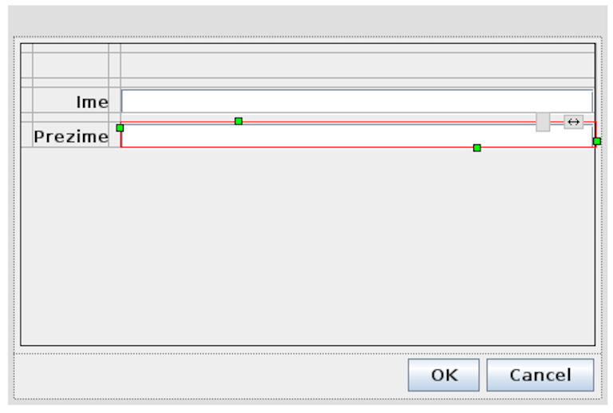
6.14. Пример
Интерни ЈСД за дефинисање граматике језика (Arpeggio Python)
def number(): return _(r'\d*\.\d*|\d+')
def factor(): return Optional(["+","-"]), [number,
("(", expression, ")")]
def term(): return factor, ZeroOrMore(["*","/"], factor)
def expression(): return term, ZeroOrMore(["+", "-"], term)
def calc(): return OneOrMore(expression), EOF
6.15. Пример
Екстерни ЈСД за дефинисање граматике језика (Arpeggio PEG)
number = r'\d*\.\d*|\d+'
factor = ("+" / "-")?
(number / "(" expression ")")
term = factor (( "*" / "/") factor)*
expression = term (("+" / "-") term)*
calc = expression+ EOF
6.16. Конкретна синтакса је важна!!!
Неки језици су погоднији за креирање интерних ЈСД
6.17. Језици погодни за креирање интерних ЈСД
- Ruby
- Groovy
- Scala
- Lisp
- …
—
6.18. Пример интерног ЈСД (Ruby Sinatra)
get '/dogs' do
# get a listing of all the dogs
end
get '/dog/:id' do
# just get one dog, you might find him like this:
@dog = Dog.find(params[:id])
# using the params convention, you specified in your route
end
post '/dog' do
# create a new dog listing
end
put '/dog/:id' do
# HTTP PUT request method to update an existing dog
end
delete '/dog/:id' do
# HTTP DELETE request method to remove a dog who's been sold!
end
6.19. Пример интерног ЈСД (Groovy Gradle)
repositories {
mavenCentral()
}
dependencies {
groovy fileTree(dir: new File(gradle.gradleHomeDir, 'lib'),
includes: ['**/groovyall*.jar'])
compile gradleApi()
compile 'eu.appsatori:gradlefatjarplugin:0.1.3',
{
ext.optional = true
}
testCompile 'org.spockframework:spockcore:0.6groovy1.8'
}
6.20. Екстерни ЈСД омогућавају потпуно прилагођавање домену.
6.21. Интерни ЈСД за музичку нотацију
Score k = new Score(Tonality.G_major);
Bar bar = new Bar(BarType.4_4);
t.addPause(Duration.1_4);
t.addNote(NoteType.A3, Duration.1_4);
t.addNote(NoteType.C2, Duration.1_4);
k.addBar(bar);
6.22. Екстерни ЈСД за музичку нотацију
У екстерној варијанти можемо у потпуности прилагодити конкретну синтаксу доменским експертима.
6.23. Lilypond note script
Али се дешава да и у екстерној варијанти ЈСД није прилагођен доменским експертима.
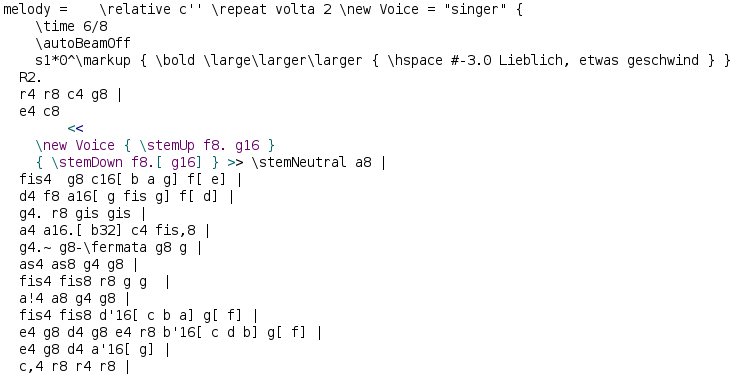
6.24. Критике ЈСД
- Скуп развој и одржавање језика.
- Потреба за експертима у домену развоја језика који су истовремено способни да анализирају домен примене.
- Језичка "какофонија" (Language Cacophony)1 и потреба да програмери познају велики број језика (посебан језик за сваки технички и/или пословни домен).
6.25. Low code/No Code платформе
Данас се платформе базиране на ЈСД често брендирају као Low Code или No Code платформе.
7. Језичке радионице (Language Workbenches)
7.1. Језичке радионице (Language Workbenches)
- Интегрисана окружења за развој, тестирање и еволуцију језика и алата за њихово ефикасно коришћење (едитори, интерпретери, компајлери и сл.). Користе се код парадигме развоја оријентисане ка језицима (Language Oriented Programming - LOP)1.
- Решавају проблем брзине развоја и лакоће одржавања ЈСД.
- Примери језичких радионица:
- Meta Programming System (MPS)
- Xtext
- Spoofax
7.2. Приступи
Пројекционе радионице - директна измена апстрактне репрезентације кроз пројекцију.
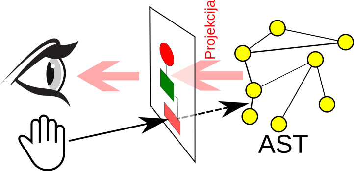
Базиране на парсерима - измена се врши посредно кроз текст који се парсира да би се добила апстрактна репрезентација.

7.3. Пројекционе радионице
- Предности:
- Могуће вишеструке конкретне синтаксе (текстуалне, графичке, табеларне…) - боље прилагођавање конкретном домену.
- Синтаксе се могу "у лету" мењати.
- Контрола валидности израза у време измене модела.
- Мане:
- Сложеност алата.
- Формат за перзистенцију није у вези са конкретним синтаксама које корисник користи. Немогуће је користити стандардне системе за контролу верзија базиране на тексту.
- Морају се развити наменски генерички едитори за сваку класу конкретних синтакси.
7.4. Радионице базиране на парсерима
- Предности:
- Једноставније за израду и одржавање.
- Теорија парсирања добро установљена. Велики број библиотека за парсирање.
- Могуће користити обичне текстуалне едиторе.
- Могуће користити стандардне системе за контролу верзија (нпр. git, subversion).
- Једноставно копирање и лепљење (енг. copy/paste).
- Мане:
- Могућа само текстуална синтакса -> ограничено прилагођавање домену.
- Провера валидности се одлаже до фазе парсирања.
7.5. Meta Programming System (MPS)
- JetBrains - http://www.jetbrains.com/mps/
- Пројекциона језичка радионица - едитори манипулишу директно апстрактном репрезентацијом (апстрактним синтаксним стаблом). Чак и у случају текстуалних нотација.
- Подршка за различите конкретне синтаксе (нотације): табеларне, текстуалне, базирани на ћелијама, графичке.
- Подршка за контролу верзија.
7.6. Meta Programming System - карактеристичан изглед
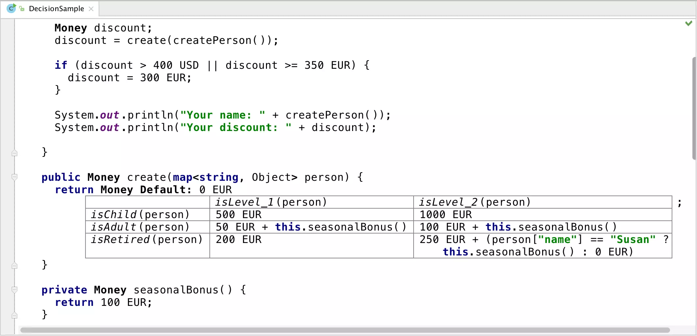
7.7. Xtext
- Настао као део пројекта слободног софтвера - openArchitectureWare.
- Иза развоја у највећој мери стоји немачка фирма Itemis.
- Постао део Ецлипсе пројекта.
- Текстуалне синтаксе. EBNF граматика.
- Употреба ECore мета-метамодела1. Мета-модел се генерише из граматике а може да користи и већ постојећи мета-модел.
- Генерисање Eclipse едитора са подршком за бојење синтаксе, навигацију, outline поглед итд.
- Xtext базирани ЈСД се дубоко интегрише у Eclipse окружење и тешко је уочити разлику са подршком за било који други језик са Eclipse подршком (нпр. Јава).
7.8. Xtext - Little tortoise језик
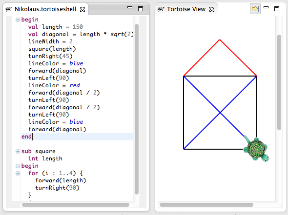
7.9. Xtext - Little tortoise граматика
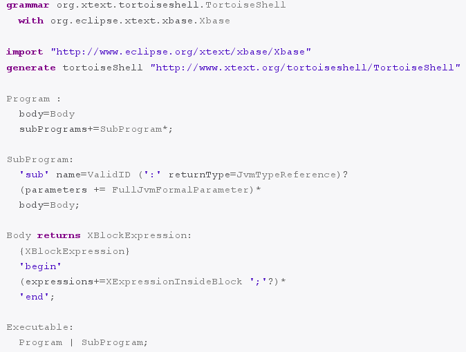
7.10. Spoofax
- Као и Xtext базиран на парсирању и текстуалним синтаксама. Креира пуну подршку за језик у виду Eclipse прикључака.
- Истраживачки пројекат на TU Delft у Холандији.
- Граматика језика се дефинише мета-језиком SDF (Syntax Definition Formalism).
- Парсер користи SGLR алгоритам (Scanerless GLR) и омогућава парсирање пуног скупа контекстно слободних граматика. У случају неодређености парсер враћа шуму парсирања (parse forest) док у случају детерминистичке граматике враћа увек стабло парсирања (parse tree).
- За транформацију програма и преписивање стабала користи се ЈСД Stratego.
7.11. Spoofax - карактеристичан изглед
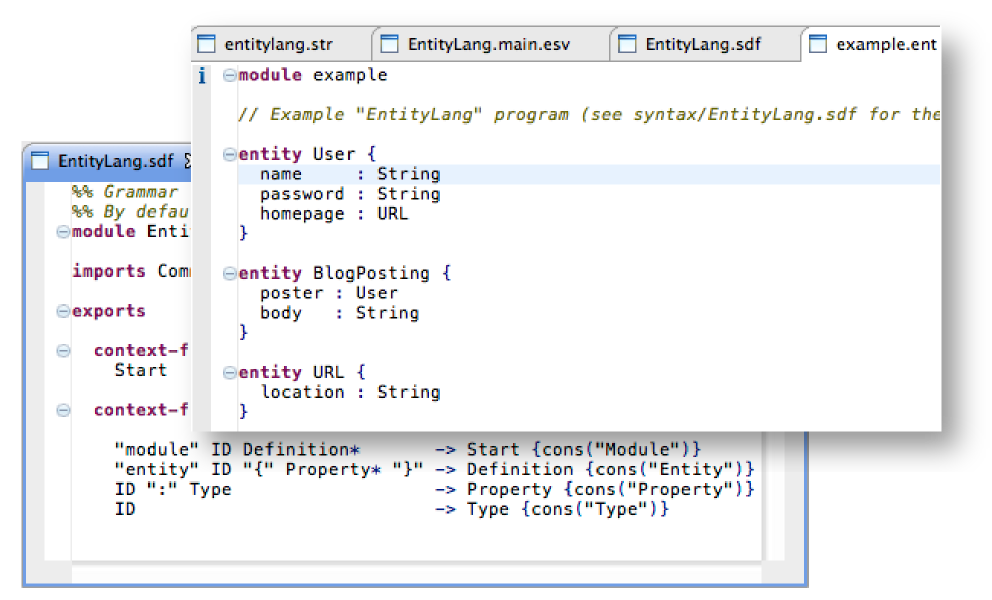
7.12. Инжењерство софтверских језика
- Software Language Engineering - SLE.
- Правац и поглед на развој софтверских језика који покушава да уједини све друге правце који у основи имају развој и употребу софтверских језика (MDE/MDA/DSM.., онтологије, grammarware, Language Oriented Programming…).
- Једна од идеја је изједначавање модела и програма - као јединствен назив предложен је мограм.*
8. LLM-native DSLs
8.1. Идеја
- Природни језици као декларативна спецификација
- ЈСД као међурепрезентација
Циљ
↓
LLM
↓
генерисани ЈСД
↓
парсер / валидатор
↓
runtime
8.2. Предности и мане
- Међурепрезентација има прецизну семантику -> детерминизам.
Али и даље је "изворни код" на природном језику тако да резултат може да варира.
циљ -> модел -> ЈСД(међурепрезентација) -> извршавање извршавање 1 -> ЈСД А извршавање 2 -> ЈСД Б- Резултат није детерминистички! Поновљивост је тешко постићи!
- Ако треба да се разуме зашто смо добили одређени резултат, дебаговање се одвија на ЈСД нивоу са којим корисник није фамилијаран.
8.3. Решење
- ЈСД се чувао као "извор истине". Природни језик само служи за његово генерисање.
- Корисници морају разумети ЈСД. ЈСД мора бити лак за читање и разумевање.
- ЈСД мора имати канонички облик. Више различитих форми мора имати једну каноничку репрезентацију.
- Round-tripping: ЈСД програм <-> објашњење на природном језику
9. Литература
- Основна
- Игор Дејановић, Језици специфични за домен, Факултет техничких наука, Нови Сад, 2021. (доступно у скриптарници ФТН-а)
- Додатна
- Meinte Boersma, Building User-Friendly DSLs, Manning, 2024.
- M. Völter, DSL Engineering: Designing, Implementing and Using Domain-Specific Languages. 2013
- S. Kelly and J.-P. Tolvanen, Domain-Specific Modeling: Enabling Full Code Generation. Wiley-IEEE Computer Society Pr, March 2008
- Federico Tomassetti, The complete guide to (external) Domain Specific Languages, February 2017.
- Alessio Stalla, Quick Domain-Specific Languages in Python with textX